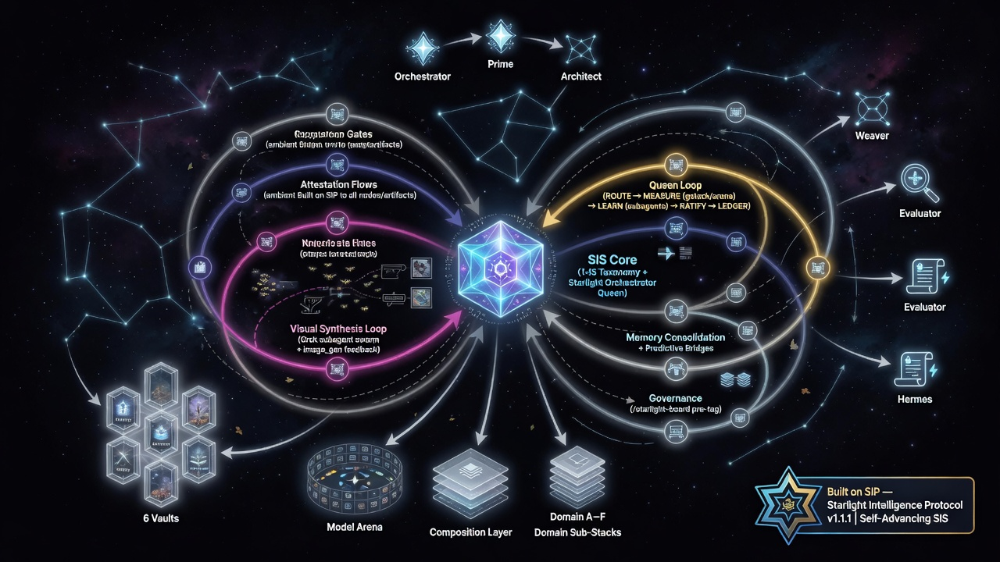
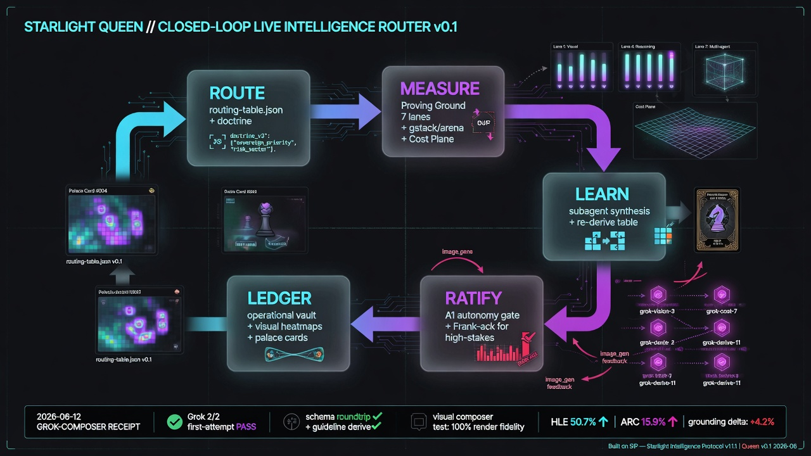
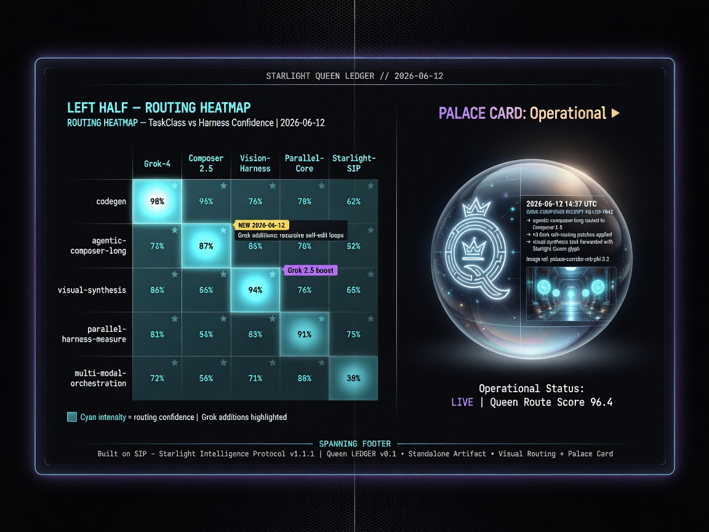
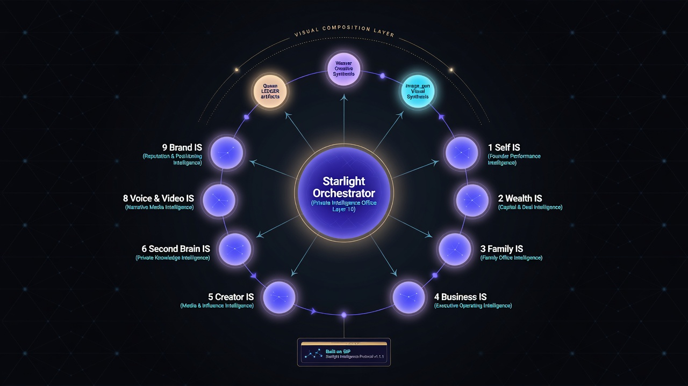

The continuous, self-advancing heart of the Starlight Intelligence System.
Scroll to witness the loop come alive.

A living visual intelligence that continuously routes, measures with parallel swarms, learns, ratifies with discipline, and ledgers through beautiful attested artifacts.
This is not a diagram. It is the operating system of intelligence — made tangible, scrollable, and felt.
Every task is classified by class (agentic-composer-long, visual-synthesis, parallel-harness-measure, memory-consolidation-queen...) and routed by evidence.

Grok subagents + gstack run concurrent lanes. Arena, Proving Ground, cost, and visual synthesis all fire in the same tick. The Queen watches every lane close.
Receipts, velocity, visual artifacts, and falsifier results are studied. Only proposals that clear A2 floors advance. The system improves itself.

The Queen does not act alone. She births and directs hundreds of specialized sub-agents that explore, measure, synthesize and verify in parallel. The canvas below is alive.
The Queen’s continuous nature is best felt in time. These are the video loops generated for the motion experience (image_to_video from the same canonical prompts). Scroll-scrub ready.

The scroll is the loop. ROUTE through doctrine. MEASURE with hundreds of parallel agents. LEARN by synthesis of receipts and visuals. RATIFY through gates. LEDGER by writing attested artifacts into the vaults.
Every visual here was produced under the Queen’s own direction — routed as visual-synthesis tasks, measured, learned, ratified, and ledged as first-class atoms.